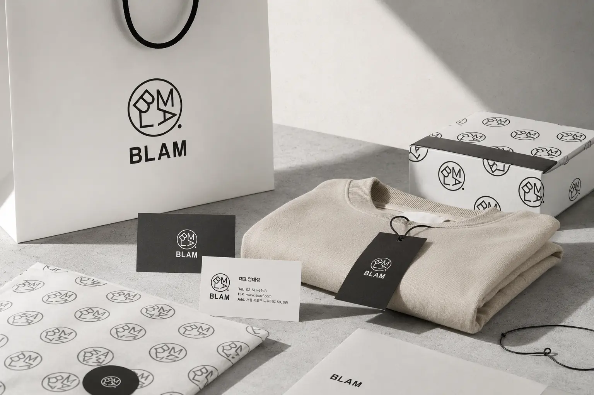
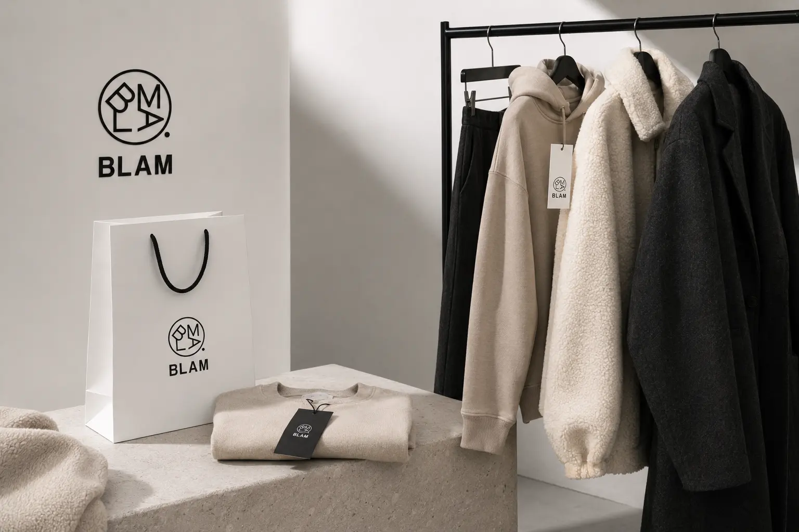
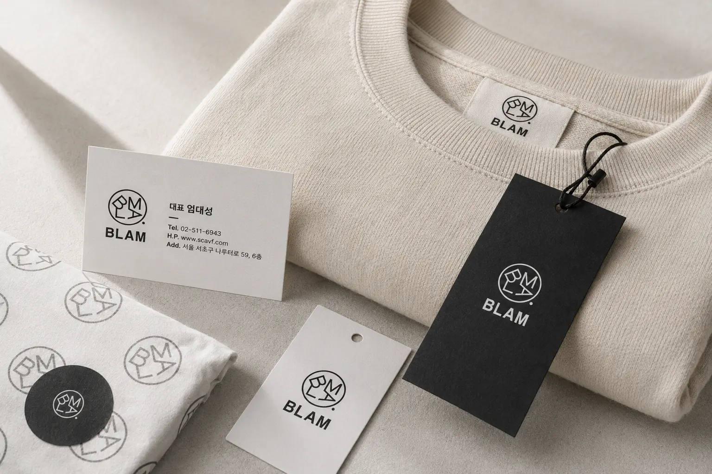
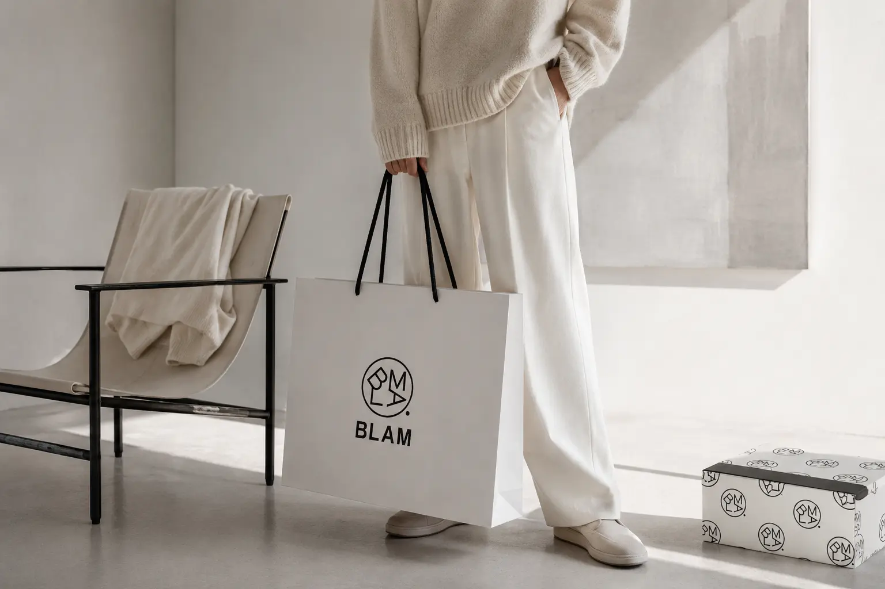
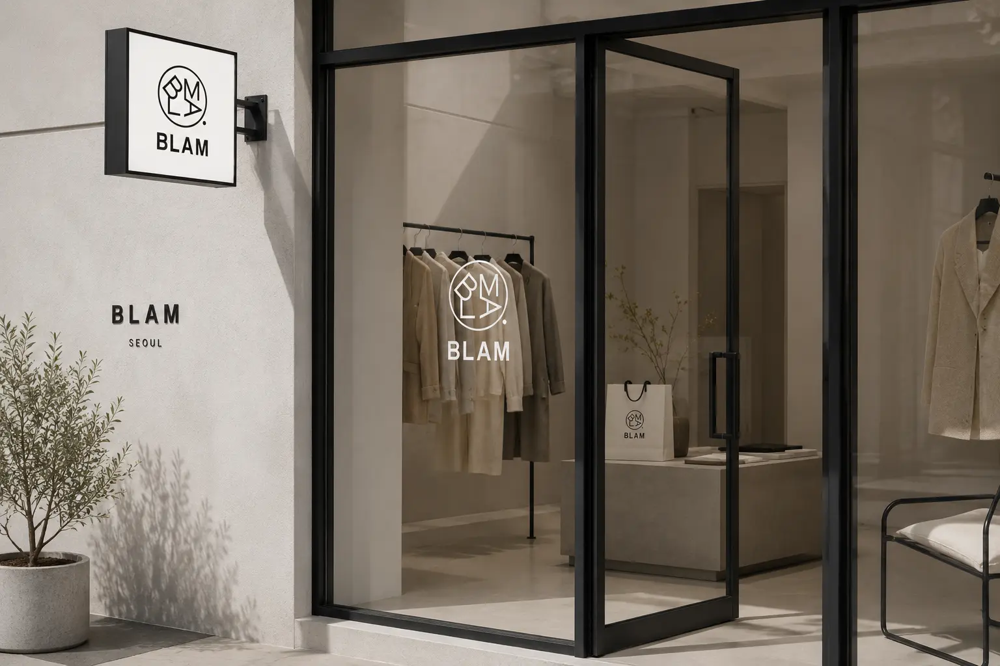
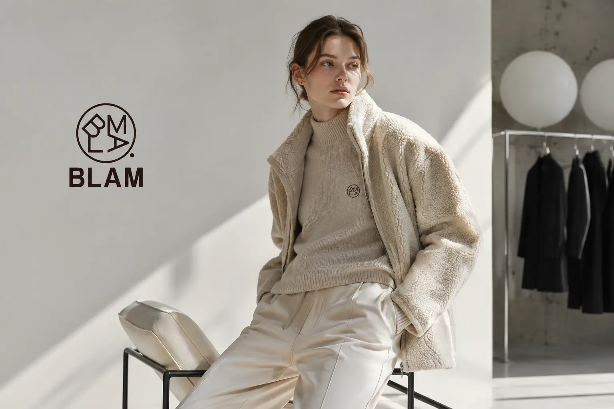
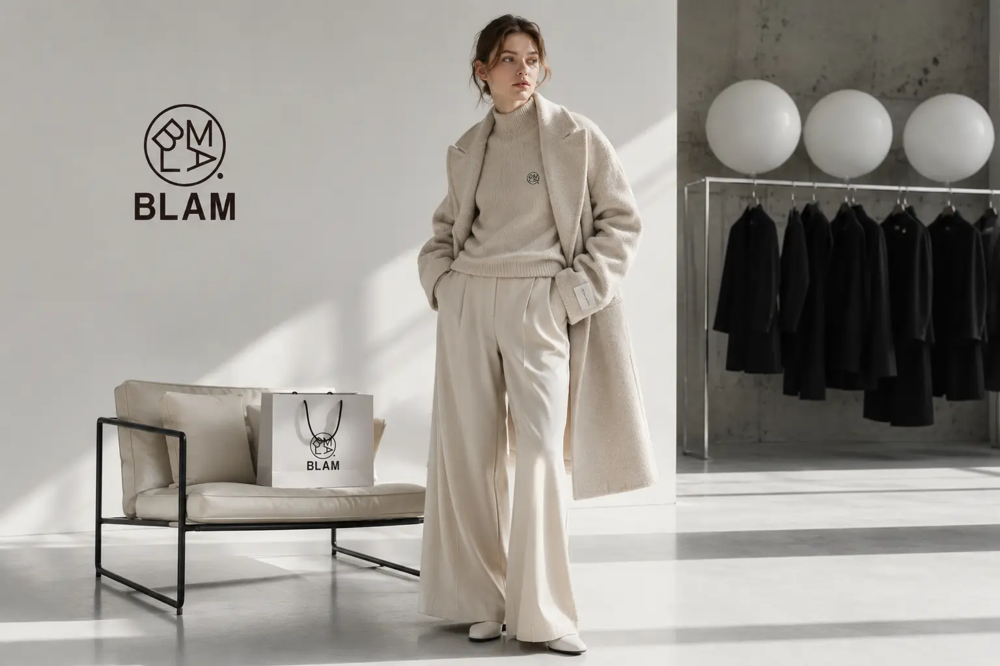
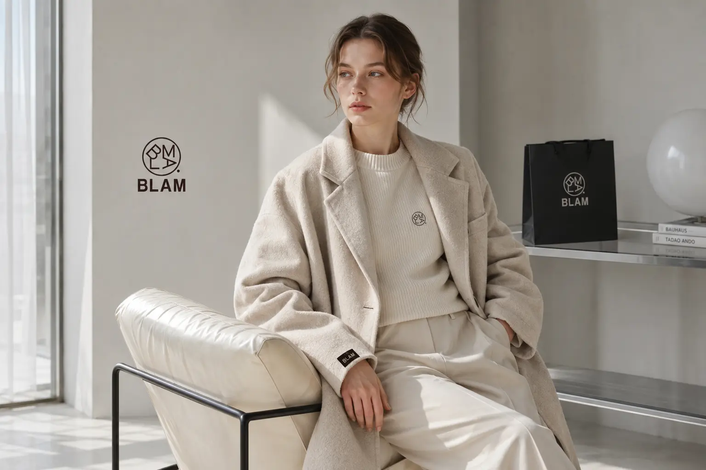

BLAM의 목표는 친환경 의류가 갖는 윤리적 가치를 트렌디하고 감각적인 패션 이미지로 확장하는 것이다. 소비자가 친환경 제품을 선택할 때 기능이나 의미뿐 아니라 디자인적 만족감까지 함께 느낄 수 있도록 하는 데 중점을 둔다. 브랜드 전반에 블랙, 그레이, 베이지 톤을 적용해 차분하면서도 개성 있는 이미지를 구축한다. 패키지, 라벨택, 쇼핑백, 웹사이트, 모바일 화면까지 일관된 아이덴티티를 적용해 브랜드 인지도를 높인다. 최종적으로는 BLAM을 환경을 생각하는 새로운 패션 아이콘으로 자리 잡게 하는 것을 목표로 한다.
Portfolio / Brand Identity
BLAM
BLAM은 친환경 의류를 기반으로 현대적이고 트렌디한 라이프스타일을 제안하는 패션 브랜드이다. 브랜드명은 Blanc Moment의 감성을 담고 있으며, 깨끗하고 담백한 순간을 옷과 브랜드 경험으로 연결한다. 무드보드에서 보이는 화이트 패브릭, 블랙 구조물, 그레이톤 공간감은 브랜드가 지향하는 모던함과 독창성을 보여준다. 단순한 의류 브랜드가 아니라 환경을 생각하는 태도와 감각적인 스타일을 함께 전달하는 브랜드로 설계되었다. BLAM은 지속가능성을 무겁게 표현하기보다 세련되고 위트 있는 방식으로 풀어내는 브랜드 이미지를 지향한다.
- Scope
- Brand Identity / Lifestyle
- Studio
- BDLab
- Year
- 2026

BLAM은 “Blanc Moment”라는 메시지를 통해 깨끗하고 감각적인 일상의 순간을 브랜드화한다. 이는 단순히 흰색이나 미니멀한 이미지를 의미하는 것이 아니라, 불필요한 것을 덜어낸 세련된 태도를 상징한다. 브랜드는 환경을 생각하는 의류를 보다 젊고 감도 높은 방식으로 전달하며, 소비자에게 새로운 선택 기준을 제안한다. “Blam for you who care about the environment”라는 문장은 브랜드가 지향하는 친환경성과 사용자 중심의 태도를 직접적으로 보여준다. 전체 메시지는 무겁지 않지만 명확하게, 친환경 패션의 새로운 방향성을 전달하는 데 집중되어 있다.
BLAM의 디자인은 강한 블랙 앤 화이트 대비와 그레이톤의 중성적인 분위기를 중심으로 구성되어 있다. 무드보드에 나타난 유령, 풍선, 구조적인 의자, 패브릭 이미지들은 브랜드의 위트와 실험적인 감성을 함께 보여준다. 전체적인 비주얼은 패션 브랜드다운 날카로움과 친환경 브랜드가 가져야 할 부드러운 소재감을 동시에 담고 있다. 로고와 심볼은 기하학적인 구조를 기반으로 제작되어 브랜드의 현대적이고 유니크한 인상을 강화한다. 이러한 디자인 방향은 BLAM을 단순한 친환경 브랜드가 아니라 감각적인 패션 브랜드로 인식시키는 데 효과적이다.






